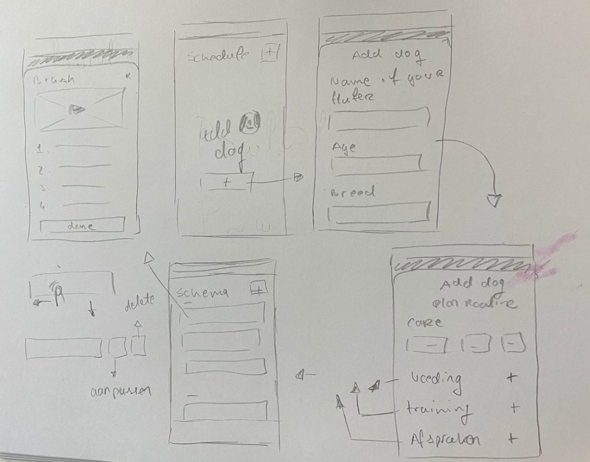

Portfolio/ Groomy
Groomy | Case study | 2024
Concept
Groomy was born out of the desire to address a personal challenge I faced with maintaining a consistent grooming routine for my dog, Atlas. As a busy pet owner, I found it difficult to keep up with all the necessary care tasks, especially while balancing other responsibilities. This realization led to the idea of designing a light-hearted, yet practical, application that could support pet owners like myself in managing their dog's care activities.
The vision for Groomy was to create something more than just a utility — it needed to be cute, engaging, and easy to use. I envisioned a tool that would remind owners of their pet’s needs in a way that didn’t feel like a chore but rather as an enjoyable activity. With the help of AI for research and the creation of the adorable mascot, I developed a concept that not only addresses a real problem but also brings joy to the process of caring for a beloved pet. This design case captures the creative journey and the user-focused approach I took to solve this everyday issue for pet owners.
Design process
The first step in creating the concept was research. I opted to use AI to help me with this, significantly reducing the time spent on basic research. Since this is for a design case, I wanted to confirm that this problem existed for others as well but didn’t want to delve too deeply into the research phase.
During the research, I identified three distinct personas:
- The New Owner: Someone who has never owned a dog before and feels overwhelmed by all the necessary care tasks for their new puppy or dog.
- The Millennial Pet Parent: This group views their pets as their children and wants to provide the best care possible. The more time they can spend with their dog, the better.
- The Busy Professional: A pet owner balancing a demanding career and wanting efficient, time-saving solutions for their dog's care.
For this design case, I chose to focus on the Millennial Pet Parent persona and designed an onboarding flow for them. I selected this persona because they have the most tasks envisioned for their pet and managing these tasks while keeping the experience light-hearted was an exciting design challenge.
Personas
Sketches and wireframes
Design
During the design process, I used several seductive design techniques to improve the usability of the Groomy application. These were: sequencing, shaping, and reminders.
Reminders
When users add actievitiesm they will receive notifications on times they added themselves or during the day.
Sequencing
To make sure the user doesn't get overwhelmed or confused with the amount of steps, I opted to use sequencing with a simple stepper. This shows the user where he is in the process and which and how many steps will follow.
Shaping
Users are affected posivively by gaining something, this can be a small achievement. By using achievement I try to shape the way they use the application and hopefully influence their behaviour positivly.
Application concept